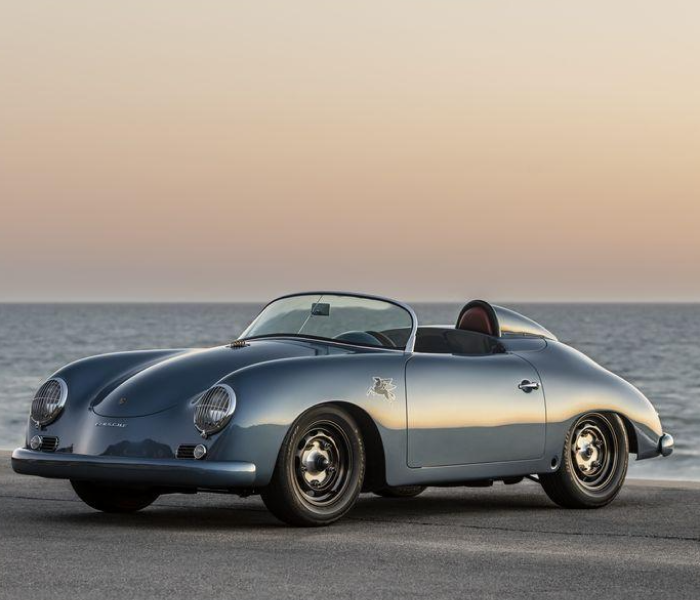
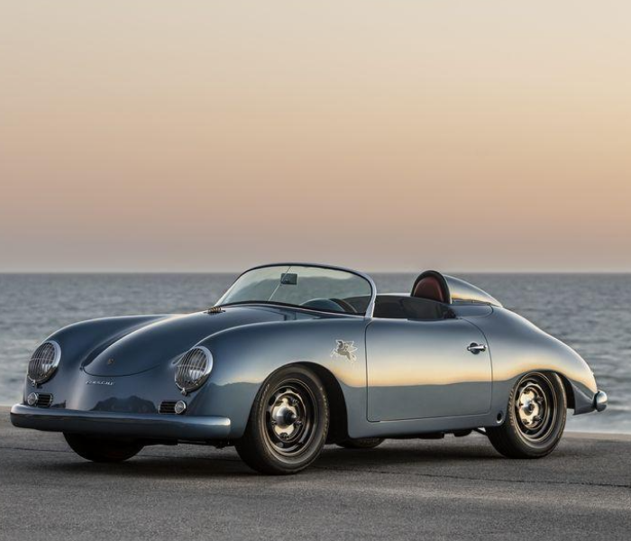

История длиной в 90 лет
К моменту выпуска первого автомобиля под своим именем Фердинанд Порше успел накопить немалый опыт. Основанное им 25 апреля 1931 года предприятие Dr. Ing. h.c. F. Porsche GmbH под его началом уже успело поработать над такими проектами, как 6-цилиндровый гоночный Auto Union и Volkswagen Käfer, ставший одним из самых продаваемых автомобилей в истории. В 1939 году был разработан первый автомобиль компании — Porsche 64, который стал прародителем всех будущих Porsche. Для постройки этого экземпляра Фердинанд Порше использовал многие компоненты от Volkswagen Käfer.

 
